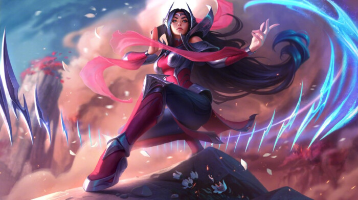
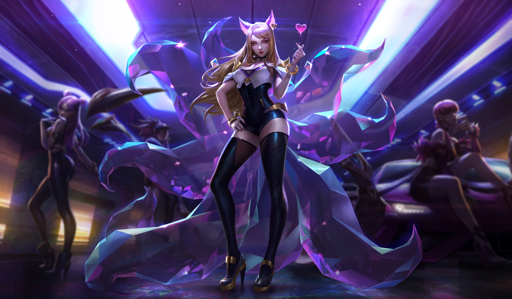
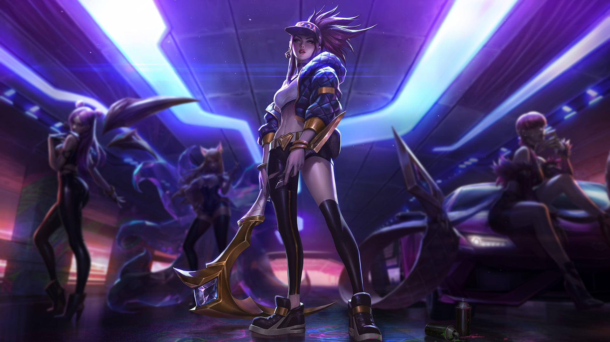
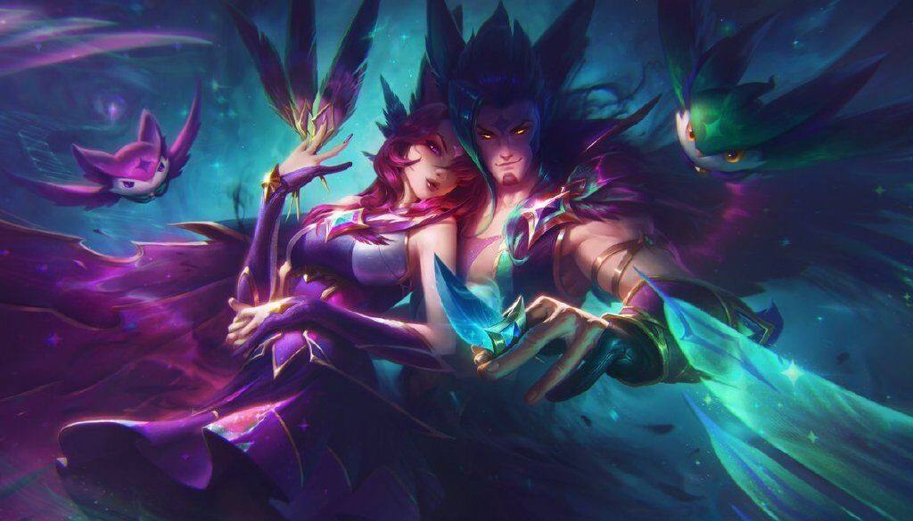
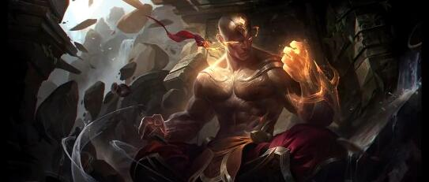

在凶险海域环绕中，诸多同盟省份在一片被称为“初生之土”的庞大群岛上组成了艾欧尼亚。
追寻万物的平衡是这里长久以来的文化基调， 因此物质与精神领域之间的界限也在这里若有若无，在野外的森林和山脉中尤为如此。
- 艾欧尼亚
- 魔法充盈于艾欧尼亚的一切——人民、历史，还有大部分的土地各种形式的生命共处于平衡之中，
同时又有许多秘密等待探索与发现。那些将这片陆地视为家园的人努力与其他种族和居民和谐共处，他们的历史远比符文之地大多数种族更加古老。 ;
艾欧尼亚的英雄们
- 刀锋舞者 刀妹

艾欧尼亚的意志
- 九尾妖狐 阿狸

- 离群之刺阿卡丽

- 逆羽 霞

- 幻翎 洛
- 盲僧 李青
